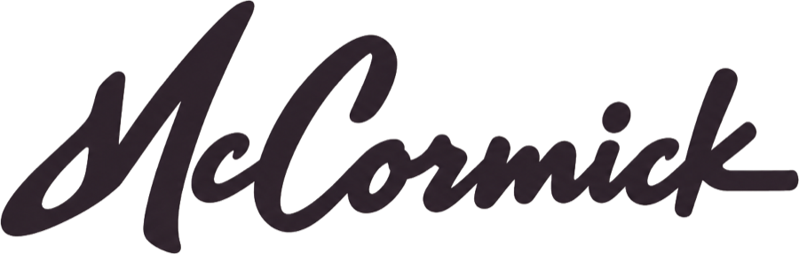
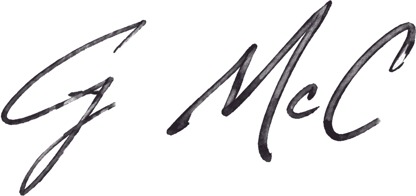

Independent Practice
October 2026
On working together.
Start by telling me what you’re trying to do with the business.
From there I look at it from a few sides. What your customers truly see in it. What you’ve been building toward. And the ideas you keep coming back to but haven’t done anything with yet.
Usually that shows what needs to happen next. I help you decide it, then I build it. Sometimes that’s how you talk about the company. Sometimes it’s the identity, the brand, or the website. Sometimes it’s the product itself.
AI is part of how I work every day. So I can tell you where it would help your business, and where it’s just needless complication.
Tell me what you’ve been thinking about. That’s enough to begin.

Gregory McCormick.
gregory@mccormick.works